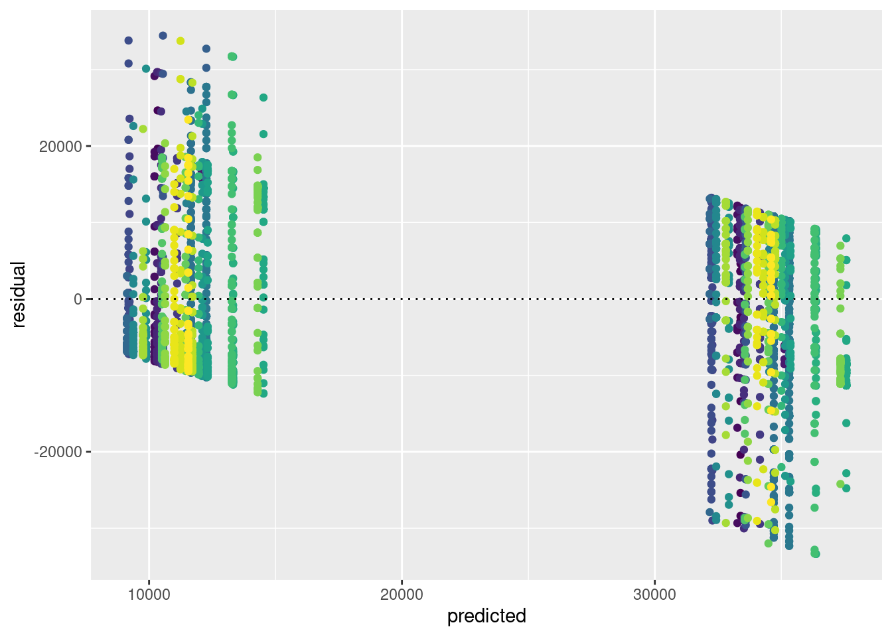
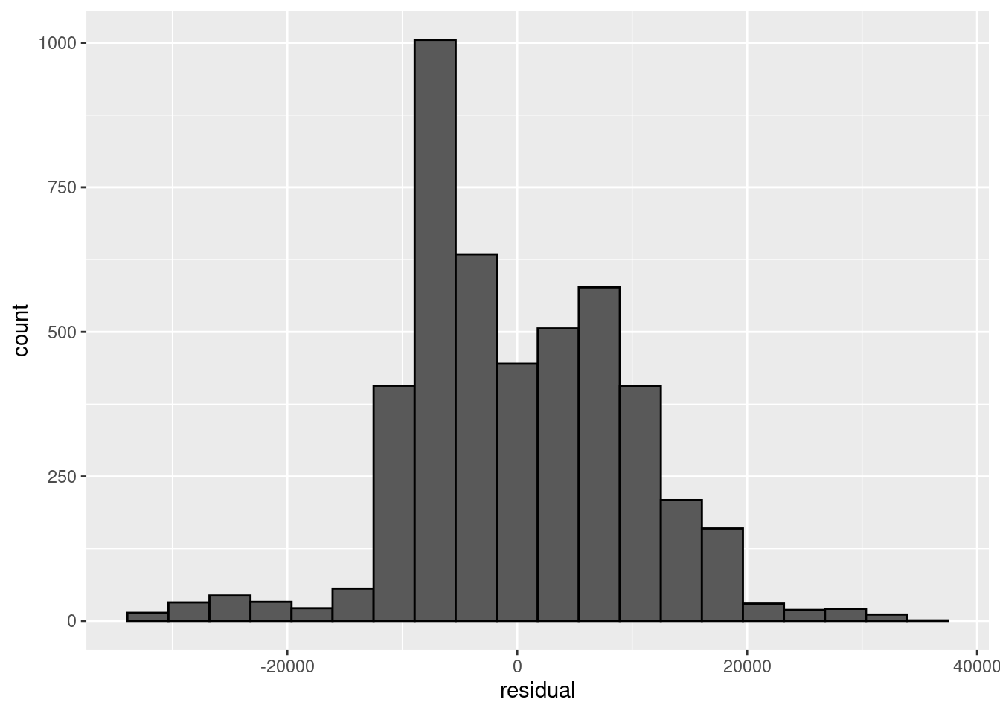
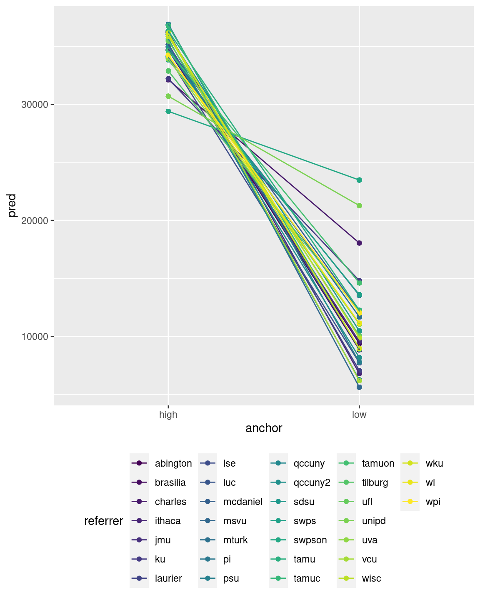

Chapter 9 Linear mixed-effects models
In this Chapter, we will look at how to estimate and perform hypothesis tests for linear mixed-effects models. The main workhorse for estimating linear mixed-effects models is the lme4 package (Bates et al. 2021). This package allows you to formulate a wide variety of mixed-effects and multilevel models through an extension of the R formula syntax. It is a really good package. But the main author of the package, Douglas Bates, has chosen not to provide \(p\)-values for the model parameters. We will therefore also consider the afex package, which provides an interface to the two main approximations (Kenward-Roger and Satterthwaite) to provide the degrees of freedom to compute \(p\)-values for \(F\) tests. While the mixed function it provides is in principle all you need to estimate the models and get the estimates, I think it is useful to also understand the underlying lme4 package (Bates et al. 2021), so we will start with a discussion of this, and then move to the afex package (Singmann et al. 2021). If you install the afex package, it will install quite a few other packages on which it relies. So to get all the required packages for this chapter, you can just type
install.packages("afex")In the R package, and you should have everything you need.
9.1 Formulating and estimating linear mixed-effects models with lme4
The gold standard for fitting linear mixed-effects models in R is the lmer() (for linear mixed-effects regression) in the lme4 package. This function takes the following arguments (amongst others, for the full list of arguments, see ?lmer):
formula: a two-sided linear formula describing both the fixed-effects and random-effects part of the model, with the response on the left of the~operator and predictors and random effects on the right-hand side of the~operator.data: Adata.frame, which needs to be in the so-called “long” format, with a single row per observation. This may be different from what you might be used to when dealing with repeated-measures. A repeated-measures ANOVA in SPSS requires data in the “wide” format, where you use columns for the different repeated measures. Data in the “wide” format has a single row for each participants. In the “long” format, you will have multiple rows for the data from a single grouping level (e.g., participant, lab, etc.).
REML: A logical variable whether to estimate the model with restricted maximum likelihood (REML = TRUE, the default) or with maximum likelihood (REML = FALSE).
As correct use of the formula interface is vital, let’s first consider again how the formula interface works in general. Formulas allow you to specify a linear model succinctly (and by default, any model created with a formula will include an intercept, unless explicitly removed). Here are some examples (adapted from Singmann and Kellen (2019)):
| Formula | Description |
|---|---|
a + b |
main effects of a and b (and no interaction) |
a:b |
only interaction of a and b (and no main effects) |
a * b |
main effects and interaction of a and b (expands to: a + b + a:b) |
(a+b+c)^2 |
main effects and two-way interactions, but no three-way interaction (expands to: a + b + c + a:b + b:c + a:c) |
(a+b)*c |
all main effects and pairwise interactions between c and a or b (expands to: a + b + c + a:c + b:c) |
0 + a |
0 suppresses the intercept resulting in a model that has one parameter per level of a (identical to: a - 1) |
The lme4 package extends the formula interface to specify random effects structures. Random effects are added to the formula by writing elements between parentheses (). Within these parentheses, you provide the specification of the random effects to be included on the left-hand side of a conditional sign |. On the right-hand side of the sign, you specify the grouping factor, or grouping factors, on which these random effects depend. The grouping factors need to be of class factor (i.e., they can not be numeric variables). Here are some examples of such specifications (again mostly adapted from Singmann and Kellen (2019)):
| Formula | Description |
|---|---|
(1|s) |
random intercepts for unique level of the factor s |
(1|s) + (1|i) |
random intercepts for each unique level of s and for each unique level of i |
(1|s/i) |
random intercepts for factor s and i, where the random effects for i are nested in s. This expands to (1|s) + (1|s:i), i.e. a random intercept for each level of s, and each unique combination of the levels of s and i. Nested random effects are used in so-called multilevel models. For example, s might refer to schools, and i to classrooms within those schools. |
(a|s) |
random intercepts and random slopes for a, for each level of s. Correlations between the intercept and slope effects are also estimated. (identical to (a*b|s)) |
(a*b|s) |
random intercepts and slopes for a, b, and the a:b interaction, for each level of s. Correlations between all the random effects are estimated. |
(0+a|s) |
random slopes for a for each level of s, but no random intercepts |
(a||s) |
random intercepts and random slopes for a, for each level of s, but no correlations between the random effects (i.e. they are set to 0). This expands to: (0+a|s) + (1|s)) |
9.1.1 Random intercepts model
Now let’s try to define a relatively simple linear mixed-effects model for the anchoring data set in the sdamr package. We will use the data from all the referrers try a few variations to get acquainted with the lmer() function. First, let’s load the packages and the data:
library(sdamr)
library(lme4)## Loading required package: Matrixdata("anchoring")Now let’s estimate a first linear mixed-effects model, with a fixed effect for anchor, and random intercepts, using everest_feet as the dependent variable. We will first ensure that anchor is a factor and associate a sum-to-zero contrast to it. We will also make referrer a factor; the contrast for this shouldn’t really matter, so we’ll leave it as a dummy code. We then set up the model, using (1|referrer) to specify that random intercept-effects should be included for each level of the referrer factor. Finally, we use the summary() function on the estimated model to obtain the estimates of the parameters.
anchoring$anchor <- as.factor(anchoring$anchor)
contrasts(anchoring$anchor) <- c(1/2, -1/2) # alphabetical order, so high before low
# define a lmer
mod <- lme4::lmer(everest_feet ~ anchor + (1|referrer), data=anchoring)
summary(mod)## Linear mixed model fit by REML ['lmerMod']
## Formula: everest_feet ~ anchor + (1 | referrer)
## Data: anchoring
##
## REML criterion at convergence: 98195.5
##
## Scaled residuals:
## Min 1Q Median 3Q Max
## -3.4433 -0.7178 -0.1361 0.7419 3.5546
##
## Random effects:
## Groups Name Variance Std.Dev.
## referrer (Intercept) 2717134 1648
## Residual 93929988 9692
## Number of obs: 4632, groups: referrer, 31
##
## Fixed effects:
## Estimate Std. Error t value
## (Intercept) 22788.3 346.8 65.70
## anchor1 23047.3 285.8 80.64
##
## Correlation of Fixed Effects:
## (Intr)
## anchor1 0.022The output first shows some information about the structure of the model, and the value of the optimized “-2 log REML” (the logarithm of the minus two restricted maximum likelihood). Then some summary statistics for the standardized residuals are shown (these are the “raw” residuals divided by the estimated standard deviation of the residuals).
Under the Random effects: header, you will find a table with estimates of the variance and standard deviation of the random effects terms for each grouping factor (just referrer in this case). So the estimated standard deviation of the random intercept: \(\hat{\sigma}_{\gamma_0} = 1648\). You will also find an estimate of the variance and standard deviation of the residuals in this table: \(\hat{\sigma}_\epsilon = 9692\)}.
Under the Fixed effects: header, you will find a table with an estimate for each fixed effect, as well as the standard error of this estimate, and an associated \(t\) statistic. This output is much like the output of calling the summary() function on a standard model estimated with the lm function. But you won’t find the \(p\)-value for these estimates. This is because the author of the lme4 package, perhaps rightly, finds none of the approximations to the error degrees of freedom good enough for general usage. Opinions on this will vary. It is agreed that the true Type 1 error rate when using one of the approximations will not be exactly equal to the \(\alpha\) level. In some cases, the difference may be substantial, but often the approximation will be reasonable enough to be useful in practice. For further information on this, there is a section in a very useful GLMM FAQ. You can also see ?lme4::pvalues for some information about various approaches to obtaining \(p\)-values.
The final table, under the Correlation of Fixed Effects, shows the approximate correlation between the estimators of the fixed effects. You can think of it as the expected correlation between the estimates of the fixed effects over all different datasets that you might obtain (assuming that the predictors have the same values in each). It is not something you generally need to be concerned about.
9.1.2 Visually assessing model assumptions
You can use the predict and residuals function to obtain the predicted values and residuals for a linear mixed effects model. You can then plot these, using e.g. ggplot2, as follows:
library(ggplot2)
tdat <- data.frame(predicted=predict(mod), residual = residuals(mod))
ggplot(tdat,aes(x=predicted,y=residual)) + geom_point() + geom_hline(yintercept=0, lty=3)It might be cool to colour the residuals by referrer as follows:
tdat <- data.frame(predicted=predict(mod), residual = residuals(mod), referrer=anchoring$referrer)
ggplot(tdat,aes(x=predicted,y=residual, colour=referrer)) + geom_point() + geom_hline(yintercept=0, lty=3) If the legend gets in the way, you can remove it as follows:
If the legend gets in the way, you can remove it as follows:
ggplot(tdat,aes(x=predicted,y=residual, colour=referrer)) + geom_point() + geom_hline(yintercept=0, lty=3) + theme(legend.position = "none")
The theme function allows for lots of functionality (check ?theme). You can also get a quick predicted vs residual plot from base R by simply calling plot(mod).
We can get a nice-looking histogram of the residuals, and a QQ plot, as follows:
ggplot(tdat,aes(x=residual)) + geom_histogram(bins=20, color="black")
ggplot(tdat,aes(sample=residual)) + stat_qq() + stat_qq_line()9.1.3 Random intercepts and slopes
Now let’s estimate a model with random intercepts and random slopes for anchor. To do so, we can simply add anchor in the mixed effects structure specification, as follows:
modg <- lme4::lmer(everest_feet ~ anchor + (1 + anchor|referrer), data=anchoring)
summary(modg)## Linear mixed model fit by REML ['lmerMod']
## Formula: everest_feet ~ anchor + (1 + anchor | referrer)
## Data: anchoring
##
## REML criterion at convergence: 97944.4
##
## Scaled residuals:
## Min 1Q Median 3Q Max
## -3.5558 -0.6374 -0.1029 0.6551 3.8431
##
## Random effects:
## Groups Name Variance Std.Dev. Corr
## referrer (Intercept) 2470481 1572
## anchor1 36036021 6003 -0.80
## Residual 87887265 9375
## Number of obs: 4632, groups: referrer, 31
##
## Fixed effects:
## Estimate Std. Error t value
## (Intercept) 22840.8 329.4 69.34
## anchor1 23578.8 1139.0 20.70
##
## Correlation of Fixed Effects:
## (Intr)
## anchor1 -0.658As you can see, the model now estimates a variance of the random slopes effects, as well as a correlation between the random intercept and slope effects. We could try to get a model without the correlations as follows:
modr <- lme4::lmer(everest_feet ~ anchor + (1 + anchor||referrer), data=anchoring)## Warning in checkConv(attr(opt, "derivs"), opt$par, ctrl = control$checkConv, :
## unable to evaluate scaled gradient## Warning in checkConv(attr(opt, "derivs"), opt$par, ctrl = control$checkConv, :
## Model failed to converge: degenerate Hessian with 1 negative eigenvaluesAs you can see in the warning messages, this leads to various estimation issues. Moreover, the correlation is actually still there!
summary(modr)## Linear mixed model fit by REML ['lmerMod']
## Formula: everest_feet ~ anchor + ((1 | referrer) + (0 + anchor | referrer))
## Data: anchoring
##
## REML criterion at convergence: 97944.4
##
## Scaled residuals:
## Min 1Q Median 3Q Max
## -3.5558 -0.6374 -0.1029 0.6551 3.8431
##
## Random effects:
## Groups Name Variance Std.Dev. Corr
## referrer (Intercept) 72369 269
## referrer.1 anchorhigh 3835401 1958
## anchorlow 18979098 4357 -0.77
## Residual 87887261 9375
## Number of obs: 4632, groups: referrer, 31
##
## Fixed effects:
## Estimate Std. Error t value
## (Intercept) 22840.8 329.4 69.34
## anchor1 23578.8 1139.0 20.70
##
## Correlation of Fixed Effects:
## (Intr)
## anchor1 -0.658
## optimizer (nloptwrap) convergence code: 0 (OK)
## unable to evaluate scaled gradient
## Model failed to converge: degenerate Hessian with 1 negative eigenvaluesAs it turns out, the || notation does not work well for factors!. It only works as expected with metric predictors. We can get the desired model by defining a contrast-coded predictor for anchor explicitly, as follows:
anchoring$anchor_contrast <- 1/2
anchoring$anchor_contrast[anchoring$anchor == "low"] <- -1/2
modr <- lme4::lmer(everest_feet ~ anchor_contrast + (1 + anchor_contrast||referrer), data=anchoring)
summary(modr)## Linear mixed model fit by REML ['lmerMod']
## Formula:
## everest_feet ~ anchor_contrast + ((1 | referrer) + (0 + anchor_contrast |
## referrer))
## Data: anchoring
##
## REML criterion at convergence: 97960.2
##
## Scaled residuals:
## Min 1Q Median 3Q Max
## -3.6330 -0.6464 -0.1011 0.6732 3.8333
##
## Random effects:
## Groups Name Variance Std.Dev.
## referrer (Intercept) 2350312 1533
## referrer.1 anchor_contrast 36126381 6011
## Residual 87899463 9375
## Number of obs: 4632, groups: referrer, 31
##
## Fixed effects:
## Estimate Std. Error t value
## (Intercept) 22773.6 326.7 69.71
## anchor_contrast 23526.1 1141.8 20.60
##
## Correlation of Fixed Effects:
## (Intr)
## anchr_cntrs 0.011That is a little cumbersome, especially if you have a factor with lots of levels, in which case you would have to specify many contrast-coded predictors. The lmer_alt() function in the afex package will automatically generate the contrast-coded predictors needed, which will be convenient. You can try this by running:
modr <- afex::lmer_alt(everest_feet ~ anchor + (1 + anchor||referrer), set_data_arg = TRUE, data=anchoring)
summary(modr)## Linear mixed model fit by REML. t-tests use Satterthwaite's method [
## lmerModLmerTest]
## Formula: everest_feet ~ anchor + (1 + re1.anchor1 || referrer)
## Data: anchoring
##
## REML criterion at convergence: 97960.2
##
## Scaled residuals:
## Min 1Q Median 3Q Max
## -3.6330 -0.6464 -0.1011 0.6732 3.8333
##
## Random effects:
## Groups Name Variance Std.Dev.
## referrer (Intercept) 2350312 1533
## referrer.1 re1.anchor1 36126381 6011
## Residual 87899463 9375
## Number of obs: 4632, groups: referrer, 31
##
## Fixed effects:
## Estimate Std. Error df t value Pr(>|t|)
## (Intercept) 22773.65 326.69 29.08 69.71 <2e-16 ***
## anchor1 23526.08 1141.84 28.22 20.60 <2e-16 ***
## ---
## Signif. codes: 0 '***' 0.001 '**' 0.01 '*' 0.05 '.' 0.1 ' ' 1
##
## Correlation of Fixed Effects:
## (Intr)
## anchor1 0.011Note the use of the additional set_data_arg = TRUE argument, which is necessary to later use the object for model comparisons with the likelihood ratio test in the next section. Also note that the parameters now do come with \(p\)-values (using the Satterthwaite approximation).
9.1.4 Likelihood ratio test with the anova function
We now have two versions of our random intercepts + slopes model, one which estimates the correlation between the random intercept and slope, and one which sets this to 0. A likelihood-ratio test comparing these two models is easily obtained as:
anova(modr,modg)## refitting model(s) with ML (instead of REML)## Data: anchoring
## Models:
## modr: everest_feet ~ anchor + (1 + re1.anchor1 || referrer)
## modg: everest_feet ~ anchor + (1 + anchor | referrer)
## npar AIC BIC logLik deviance Chisq Df Pr(>Chisq)
## modr 5 98000 98032 -48995 97990
## modg 6 97985 98024 -48987 97973 16.339 1 5.296e-05 ***
## ---
## Signif. codes: 0 '***' 0.001 '**' 0.01 '*' 0.05 '.' 0.1 ' ' 1Note the message refitting model(s) with ML (instead of REML). The likelihood-ratio test requires that the models are estimated by maximum likelihood, rather than restricted maximum likelihood (REML). The lme4 package is clever enough to realize this, and first re-estimates the model before computing the likelihood ratio test. Also note that the test statistic is now called “Chisq,” for Chi-squared. This is the one we want. The test result is significant, and hence we can reject the null hypothesis that the correlation between the random intercept and slope is \(\rho_{\gamma_0,\gamma_1} = 0\).
9.1.5 Confidence intervals
While the lme4 package does not provide \(p\)-values, it does have functionality to compute confidence intervals via the confint() function. The default option is to compute so-called profile likelihood confidence intervals for all (fixed and random) parameters:
confint(modg)## Computing profile confidence intervals ...## 2.5 % 97.5 %
## .sig01 1083.558297 2187.2825617
## .sig02 -0.956541 -0.5042915
## .sig03 4471.113419 7999.4737204
## .sigma 9185.991570 9570.4663804
## (Intercept) 22184.246089 23499.3202067
## anchor1 21298.714977 25838.8350190Note that .sig01 refers to the standard deviation of the random intercept (i.e. \(\sigma{\gamma_0}\)), .sig02 refers to the correlation between the random intercept and random slope (i.e. \(\rho_{\gamma_0,\gamma_1}\)), and .sig03 to the standard deviation of the random slope (i.e. \(\sigma_{\gamma_1}\)). The value of .sig refers to the standard deviation of the error term (i.e. \(\sigma_\epsilon\)). Unfortunately, these are not the most informative labels, so it pays to check the values reported in summary(modg) to match them to the output here.
Parametric bootstrap confidence (via simulation) can be obtained by setting the argument method = "boot". This is a very computationally intensive procedure, so you will have to wait some time for the results! Moreover, due to the random simulation involved, the results will vary (hopefully a little) every time you run the procedure:
set.seed(20201201)
confint(modg, method="boot")## Computing bootstrap confidence intervals ...##
## 14 message(s): boundary (singular) fit: see ?isSingular## 2.5 % 97.5 %
## .sig01 1041.469 2111.5327662
## .sig02 -1.000 -0.5192476
## .sig03 4369.214 7716.5436429
## .sigma 9171.071 9573.5222532
## (Intercept) 22138.746 23535.5279557
## anchor1 21366.564 26111.6466861confint(modg, method="boot")## Computing bootstrap confidence intervals ...##
## 12 message(s): boundary (singular) fit: see ?isSingular
## 1 warning(s): Model failed to converge with max|grad| = 0.00760288 (tol = 0.002, component 1)## 2.5 % 97.5 %
## .sig01 1045.6131551 2151.4335327
## .sig02 -0.9976517 -0.5486075
## .sig03 4296.8794715 7695.7776431
## .sigma 9164.6786544 9584.8451898
## (Intercept) 22141.6525509 23504.3587997
## anchor1 21047.7038556 25819.4349753Note the warning messages. By default, the bootstrap simulates nsim=500 datasets and re-estimates the model for each. In some of the simulated datasets, the estimation may fail, which provides the resulting warning messages. While confidence intervals and hypothesis tests, in the case of “standard” linear models give the same results, this is not necessarily the case for mixed models, as the \(F\) tests for the fixed effects involve approximation of the error degrees of freedom (\(\text{df}_2\)), whilst the computation of the confidence intervals rely on other forms of approximation (e.g. simulation for the parametric bootstrap). As confidence intervals are included by default in lme4, it seems like the author of the package believes these are perhaps more principled than the \(F\) tests for the fixed effects.
9.1.6 Plotting model predictions
It can be useful to plot the model predictions for each level of the random grouping factor. We can obtain such a plot by storing the model predictions with the data. By adding the group = and colour = arguments in the aes() function, you can then get separate results for all levels of the random effect factor (referrer here). For instance, we can plot the predictions for the different levels of the anchor factor with connecting lines as follows:
anchoring$pred <- predict(modg)
ggplot(anchoring,aes(x=anchor,y=pred,colour=referrer, group=referrer)) + geom_point() + geom_line() + theme(legend.position="bottom", legend.direction = "horizontal")
This would also work if the variable of the x-axis is continuous, rather than categorical.
9.2 Obtaining p-values with afex::mixed
Despite some of the concerns about the validity of the \(p\)-values for \(F\)-tests of the fixed effects, they are often useful (if only to satisfy reviewers of your paper). Packages such as pbkrtest (Højsgaard 2020) and lmerTest (Kuznetsova, Bruun Brockhoff, and Haubo Bojesen Christensen 2020) have been developed to provide these for mixed-effects models estimated with the lmer() function, using the Kenward-Roger or parametric bootstrap, and Satterthwaite approximations, respectively. The afex package (Singmann et al. 2021) provides a common interface to the functionality of these packages, via its mixed function. The mixed function offers some other convenient features, such as automatically using sum-to-zero contrasts (via contr.sum()), although I prefer setting my own contrasts and turn this off.
Some of the main arguments to the mixed function (see ?mixed for the full overview) are:
formula: a two-sided linear formula describing both the fixed-effects and random-effects part of the model, with the response on the left of the~operator and predictors and random effects on the right-hand side of the~operator.data: Adata.frame, which needs to be in the so-called “long” format, with a single row per observation. This may be different from what you might be used to when dealing with repeated-measures. A repeated-measures ANOVA in SPSS requires data in the “wide” format, where you use columns for the different repeated measures. Data in the “wide” format has a single row for each participants. In the “long” format, you will have multiple rows for the data from a single grouping level (e.g., participant, lab, etc.).
type: Sums of Squares type to use (1, 2, or 3). Default is 3.method: Character vector indicating which approximation method to use for obtaining the p-values."KR"for the Kenward-Roger approximation,"S"for the Satterthwaite approximation (the default),"PB"for a parametric bootstrap, and"LRT"for the likelihood ratio test.test_intercept: Logical variable indicating whether to obtain a test of the fixed intercept (only for Type 3 SS). Default isFALSEcheck_contrasts: Logical variable indicating whether contrasts for factors should be checked and changed tocontr.sumif they are not identical tocontr.sum. Default isTRUE. You should set this toFALSEif you supply your own orthogonal contrasts.expand_re: Logical variable indicating whether random effect terms should be expanded (i.e. factors transformed into contrast-coded numerical predictors) before fitting with lmer. This allows proper use of the||notation with factors.
Let’s try it out! First, let’s load the package:
library(afex)## ************
## Welcome to afex. For support visit: http://afex.singmann.science/## - Functions for ANOVAs: aov_car(), aov_ez(), and aov_4()
## - Methods for calculating p-values with mixed(): 'S', 'KR', 'LRT', and 'PB'
## - 'afex_aov' and 'mixed' objects can be passed to emmeans() for follow-up tests
## - NEWS: emmeans() for ANOVA models now uses model = 'multivariate' as default.
## - Get and set global package options with: afex_options()
## - Set orthogonal sum-to-zero contrasts globally: set_sum_contrasts()
## - For example analyses see: browseVignettes("afex")
## ************##
## Attaching package: 'afex'## The following object is masked from 'package:lme4':
##
## lmerNote that after loading the afex package, the lmer function from lme4 will be “masked” and the corresponding function from the afex namespace will be used (it is actually the same as the one from the lmerTest namespace), which is mostly the same, but expands the class of the returned object somewhat. Afterwards, you either have to use lme4::lmer whenever you explicitly want the function from the lme4 package, or avoid loading the afex package, and always type e.g. afex::mixed. Either is fine, and mostly you wouldn’t need to worry, but sometimes the overriding of function names in the global workspace can give confusion and unexpected results, so it is good to be aware if this behaviour.
In the code below, I use the mixed function to estimate the model and compute \(p\)-values for the fixed effect of anchor and the intercept with the "KR" option (note that this takes some time!):
afmodg <- mixed(everest_feet ~ anchor + (1 + anchor|referrer), data=anchoring, check_contrasts = FALSE, test_intercept = TRUE, method="KR")## Fitting one lmer() model. [DONE]
## Calculating p-values. [DONE]The class of the returned object saved as afmodg is different from the usual one returned by the lmer function. To get the \(F\) tests, you can just type in the name of the object:
afmodg## Mixed Model Anova Table (Type 3 tests, KR-method)
##
## Model: everest_feet ~ anchor + (1 + anchor | referrer)
## Data: anchoring
## Effect df F p.value
## 1 (Intercept) 1, 28.88 4759.47 *** <.001
## 2 anchor 1, 29.66 427.80 *** <.001
## ---
## Signif. codes: 0 '***' 0.001 '**' 0.01 '*' 0.05 '+' 0.1 ' ' 1You can also use the summary() function to obtain the parameter estimates:
summary(afmodg)## Linear mixed model fit by REML. t-tests use Satterthwaite's method [
## lmerModLmerTest]
## Formula: everest_feet ~ anchor + (1 + anchor | referrer)
## Data: data
##
## REML criterion at convergence: 97944.4
##
## Scaled residuals:
## Min 1Q Median 3Q Max
## -3.5558 -0.6374 -0.1029 0.6551 3.8431
##
## Random effects:
## Groups Name Variance Std.Dev. Corr
## referrer (Intercept) 2470481 1572
## anchor1 36036021 6003 -0.80
## Residual 87887265 9375
## Number of obs: 4632, groups: referrer, 31
##
## Fixed effects:
## Estimate Std. Error df t value Pr(>|t|)
## (Intercept) 22840.77 329.42 27.49 69.34 <2e-16 ***
## anchor1 23578.76 1138.95 27.32 20.70 <2e-16 ***
## ---
## Signif. codes: 0 '***' 0.001 '**' 0.01 '*' 0.05 '.' 0.1 ' ' 1
##
## Correlation of Fixed Effects:
## (Intr)
## anchor1 -0.658Note that we now also get \(p\)-values for the effects (which are here derived from the Satterthwaite approximation to the degrees of freedom). That is, as mentioned before, because by loading the afex package, the lme4::lmer() function is masked and replaced by the lmerTest::lmer() function. This function uses the lme4::lmer() function to estimate the model, but then adds further results to compute the Satterthwaite degrees of freedom. If you like, you could force the use of the lme4::lmer() function, by specifying the appropriate namespace, as in e.g.
lmermodg <- lme4::lmer(everest_feet ~ anchor + (1 + anchor|referrer), data=anchoring)Continuing our example, we can also estimate the model without correlation between the random effects as follows:
afmodr <- mixed(everest_feet ~ anchor + (1 + anchor||referrer), data=anchoring, check_contrasts = FALSE, test_intercept = TRUE, expand_re = TRUE, method="KR")## Fitting one lmer() model. [DONE]
## Calculating p-values. [DONE]and get the \(F\) tests for this model:
afmodr## Mixed Model Anova Table (Type 3 tests, KR-method)
##
## Model: everest_feet ~ anchor + (1 + anchor || referrer)
## Data: anchoring
## Effect df F p.value
## 1 (Intercept) 1, 28.86 4843.68 *** <.001
## 2 anchor 1, 29.69 424.13 *** <.001
## ---
## Signif. codes: 0 '***' 0.001 '**' 0.01 '*' 0.05 '+' 0.1 ' ' 1and parameter estimates
summary(afmodr)## Linear mixed model fit by REML. t-tests use Satterthwaite's method [
## lmerModLmerTest]
## Formula: everest_feet ~ anchor + (1 + re1.anchor1 || referrer)
## Data: data
##
## REML criterion at convergence: 97960.2
##
## Scaled residuals:
## Min 1Q Median 3Q Max
## -3.6330 -0.6464 -0.1011 0.6732 3.8333
##
## Random effects:
## Groups Name Variance Std.Dev.
## referrer (Intercept) 2350312 1533
## referrer.1 re1.anchor1 36126381 6011
## Residual 87899463 9375
## Number of obs: 4632, groups: referrer, 31
##
## Fixed effects:
## Estimate Std. Error df t value Pr(>|t|)
## (Intercept) 22773.65 326.69 29.08 69.71 <2e-16 ***
## anchor1 23526.08 1141.84 28.22 20.60 <2e-16 ***
## ---
## Signif. codes: 0 '***' 0.001 '**' 0.01 '*' 0.05 '.' 0.1 ' ' 1
##
## Correlation of Fixed Effects:
## (Intr)
## anchor1 0.011Note that entering these two mixed models as is into the anova function will not provide the desired re-estimation of the models by maximum likelihood:
anova(afmodr,afmodg)## Data: data
## Models:
## afmodr: everest_feet ~ anchor + (1 + re1.anchor1 || referrer)
## afmodg: everest_feet ~ anchor + (1 + anchor | referrer)
## npar AIC BIC logLik deviance Chisq Df Pr(>Chisq)
## afmodr 5 97970 98002 -48980 97960
## afmodg 6 97956 97995 -48972 97944 15.781 1 7.111e-05 ***
## ---
## Signif. codes: 0 '***' 0.001 '**' 0.01 '*' 0.05 '.' 0.1 ' ' 1This is not clear from the output (apart from the missing refitting model(s) with ML (instead of REML) message). For the correct results, you will need to provide the lmer model, stored in the afmodr and afmodg objects under $full_model:
anova(afmodr$full_model, afmodg$full_model)## refitting model(s) with ML (instead of REML)## Data: data
## Models:
## afmodr$full_model: everest_feet ~ anchor + (1 + re1.anchor1 || referrer)
## afmodg$full_model: everest_feet ~ anchor + (1 + anchor | referrer)
## npar AIC BIC logLik deviance Chisq Df Pr(>Chisq)
## afmodr$full_model 5 98000 98032 -48995 97990
## afmodg$full_model 6 97985 98024 -48987 97973 16.339 1 5.296e-05 ***
## ---
## Signif. codes: 0 '***' 0.001 '**' 0.01 '*' 0.05 '.' 0.1 ' ' 1Although the differences are small, the first test compares the “-2 log REML,” instead of the desired “-2 log ML” values. The assumptions underlying the likelihood-ratio test require the latter.
9.3 Crossed random effects
The lme4::lmer() function (and the afex::mixed() function which that is built on top of that function) allows you to specify multiple sources for random effects. In the book, we discussed an example with crossed random effects, using the speeddate data. In this data, participants (identified by the iid variable) provide ratings of various attributes of different dating partners (identified by the pid variable). Here, iid refers to the Person factor, and pid to the Item factor.
To estimate a model with crossed random effects, you simply include two separate statements for the random effects in the model formula, one for the effects depending on iid, and one for the random effects depending on pid:
data("speeddate")
dat <- speeddate
# center the predictors
dat$other_attr_c <- center(dat$other_attr)
dat$other_intel_c <- center(dat$other_intel)
## estimate the model
crmod <- mixed(other_like ~ other_attr_c*other_intel_c + (1 + other_attr_c*other_intel_c|iid) + (1 + other_attr_c*other_intel_c|pid), data=dat, test_intercept = TRUE, method="KR")## Warning: Due to missing values, reduced number of observations to 1509## Numerical variables NOT centered on 0: other_attr_c, other_intel_c
## If in interactions, interpretation of lower order (e.g., main) effects difficult.## Fitting one lmer() model.## boundary (singular) fit: see ?isSingular## [DONE]
## Calculating p-values. [DONE]Note there are some warnings. The first states that, due to missing values, the number of observations is reduced. If a row in the dataset has a missing value on either the dependent variable to one of the predictors, it is not possible to compute an error or model prediction. Hence, such rows are removed from the dataset before fitting the model. The second warning, starting with Numerical variables NOT centered on 0 we can ignore, as it is erroneous (we have centered the numeric predictors). The checks performed by afex::mixed() sometimes miss the mark. The third warning regarding boundary singular fit (boundary (singular) fit: see ?isSingular), is something that will require attention. It signals that the model may be too complex to estimate properly. Such issues often (but not always!) show in estimated variances of random effects of 0 (i.e., no variance) or correlations between random effects of 1 or -1. Before doing anything else, we should therefore inspect the random-effects estimates. We can view these estimates (as well as those of the fixed effects) as usual with the summary() function:
summary(crmod)## Linear mixed model fit by REML. t-tests use Satterthwaite's method [
## lmerModLmerTest]
## Formula: other_like ~ other_attr_c * other_intel_c + (1 + other_attr_c *
## other_intel_c | iid) + (1 + other_attr_c * other_intel_c | pid)
## Data: data
##
## REML criterion at convergence: 4673.3
##
## Scaled residuals:
## Min 1Q Median 3Q Max
## -4.6285 -0.5182 0.0161 0.5374 4.0147
##
## Random effects:
## Groups Name Variance Std.Dev. Corr
## iid (Intercept) 0.0787745 0.28067
## other_attr_c 0.0234085 0.15300 -0.54
## other_intel_c 0.0230445 0.15180 0.50 -0.89
## other_attr_c:other_intel_c 0.0008858 0.02976 -0.43 -0.27 0.54
## pid (Intercept) 0.2848115 0.53368
## other_attr_c 0.0423056 0.20568 -0.47
## other_intel_c 0.0489423 0.22123 0.11 -0.63
## other_attr_c:other_intel_c 0.0019882 0.04459 -0.36 0.27 -0.16
## Residual 0.9630700 0.98136
## Number of obs: 1509, groups: iid, 102; pid, 102
##
## Fixed effects:
## Estimate Std. Error df t value Pr(>|t|)
## (Intercept) 6.224027 0.069972 112.566265 88.950 < 2e-16
## other_attr_c 0.555403 0.033642 119.387075 16.509 < 2e-16
## other_intel_c 0.374503 0.039240 89.115616 9.544 2.78e-15
## other_attr_c:other_intel_c -0.009401 0.013144 43.430420 -0.715 0.478
##
## (Intercept) ***
## other_attr_c ***
## other_intel_c ***
## other_attr_c:other_intel_c
## ---
## Signif. codes: 0 '***' 0.001 '**' 0.01 '*' 0.05 '.' 0.1 ' ' 1
##
## Correlation of Fixed Effects:
## (Intr) othr_t_ othr_n_
## other_ttr_c -0.365
## other_ntl_c 0.118 -0.557
## othr_tt_:__ -0.261 0.011 0.079
## optimizer (nloptwrap) convergence code: 0 (OK)
## boundary (singular) fit: see ?isSingularIn this case, none of the variances are estimated as 0, and none of the correlations are estimated as 1 or -1. But the estimated variances of the random other_attr_c:other_intel_c interactions are quite low, and close to 0. As such, it might make sense to remove these effects.
crmod2 <- mixed(other_like ~ other_attr_c*other_intel_c + (1 + other_attr_c + other_intel_c|iid) + (1 + other_attr_c + other_intel_c|pid), data=dat, test_intercept = TRUE, method="KR")## Warning: Due to missing values, reduced number of observations to 1509## Numerical variables NOT centered on 0: other_attr_c, other_intel_c
## If in interactions, interpretation of lower order (e.g., main) effects difficult.## Fitting one lmer() model.## boundary (singular) fit: see ?isSingular## Warning: Model failed to converge with 1 negative eigenvalue: -2.2e+03## [DONE]
## Calculating p-values. [DONE]This does not resolve the issue, as we still get the boundary (singular) fit warning. Moreover, we now get another warning: Model failed to converge with 1 negative eigenvalue. Checking the parameter estimates:
summary(crmod2)## Linear mixed model fit by REML. t-tests use Satterthwaite's method [
## lmerModLmerTest]
## Formula: other_like ~ other_attr_c * other_intel_c + (1 + other_attr_c +
## other_intel_c | iid) + (1 + other_attr_c + other_intel_c | pid)
## Data: data
##
## REML criterion at convergence: 4717
##
## Scaled residuals:
## Min 1Q Median 3Q Max
## -4.4392 -0.5571 0.0336 0.5380 3.9036
##
## Random effects:
## Groups Name Variance Std.Dev. Corr
## iid (Intercept) 0.06644 0.2578
## other_attr_c 0.02636 0.1624 -0.60
## other_intel_c 0.02023 0.1422 0.75 -0.98
## pid (Intercept) 0.30244 0.5499
## other_attr_c 0.01746 0.1321 -1.00
## other_intel_c 0.03484 0.1867 0.28 -0.28
## Residual 1.05820 1.0287
## Number of obs: 1509, groups: iid, 102; pid, 102
##
## Fixed effects:
## Estimate Std. Error df t value Pr(>|t|)
## (Intercept) 6.20784 0.07028 117.29792 88.331 <2e-16 ***
## other_attr_c 0.53693 0.02948 118.54368 18.211 <2e-16 ***
## other_intel_c 0.37939 0.03634 92.46214 10.441 <2e-16 ***
## other_attr_c:other_intel_c -0.01269 0.01056 136.72908 -1.202 0.231
## ---
## Signif. codes: 0 '***' 0.001 '**' 0.01 '*' 0.05 '.' 0.1 ' ' 1
##
## Correlation of Fixed Effects:
## (Intr) othr_t_ othr_n_
## other_ttr_c -0.530
## other_ntl_c 0.217 -0.467
## othr_tt_:__ -0.132 -0.022 0.058
## optimizer (nloptwrap) convergence code: 0 (OK)
## boundary (singular) fit: see ?isSingularshows a rather high negative correlation between the iid-wise random effects of other_attr_c and other_intel_c. Perhaps allowing the random effects to be correlated is too complex for this data. Hence, we can try a model with independent random effects:
crmod3 <- mixed(other_like ~ other_attr_c*other_intel_c + (1 + other_attr_c + other_intel_c||iid) + (1 + other_attr_c + other_intel_c||pid), data=dat, test_intercept = TRUE, method="KR")## Warning: Due to missing values, reduced number of observations to 1509## Numerical variables NOT centered on 0: other_attr_c, other_intel_c
## If in interactions, interpretation of lower order (e.g., main) effects difficult.## Fitting one lmer() model. [DONE]
## Calculating p-values. [DONE]This eliminates the boundary singular fit issue. Inspecting the random-effects estimates shows no clear signs of further problems, as all the variances are well-above 0:
summary(crmod3)## Linear mixed model fit by REML. t-tests use Satterthwaite's method [
## lmerModLmerTest]
## Formula: other_like ~ other_attr_c * other_intel_c + (1 + other_attr_c +
## other_intel_c || iid) + (1 + other_attr_c + other_intel_c || pid)
## Data: data
##
## REML criterion at convergence: 4722.6
##
## Scaled residuals:
## Min 1Q Median 3Q Max
## -4.4949 -0.5229 -0.0019 0.5369 3.9118
##
## Random effects:
## Groups Name Variance Std.Dev.
## iid (Intercept) 0.064981 0.25491
## iid.1 other_attr_c 0.016389 0.12802
## iid.2 other_intel_c 0.009267 0.09627
## pid (Intercept) 0.260186 0.51008
## pid.1 other_attr_c 0.038972 0.19741
## pid.2 other_intel_c 0.049752 0.22305
## Residual 0.992730 0.99636
## Number of obs: 1509, groups: iid, 102; pid, 102
##
## Fixed effects:
## Estimate Std. Error df t value Pr(>|t|)
## (Intercept) 6.23128 0.06724 115.11853 92.673 < 2e-16 ***
## other_attr_c 0.55284 0.03177 130.82879 17.399 < 2e-16 ***
## other_intel_c 0.36684 0.03763 90.58968 9.749 8.94e-16 ***
## other_attr_c:other_intel_c -0.01010 0.01249 314.62283 -0.808 0.42
## ---
## Signif. codes: 0 '***' 0.001 '**' 0.01 '*' 0.05 '.' 0.1 ' ' 1
##
## Correlation of Fixed Effects:
## (Intr) othr_t_ othr_n_
## other_ttr_c -0.021
## other_ntl_c -0.016 -0.153
## othr_tt_:__ -0.066 -0.055 0.129Although the “keep it maximal” idea is good in theory, in practice, maximal models are often difficult or impossible to estimate. Determining an appropriate random-effects structure may require reducing the complexity of the model iteratively. Some guidelines for this process are provided by Matuschek et al. (2017).
In this case, the results regarding the fixed effects are robust over the different random-effects structures. For instance, comparing the maximal model to the final model shows that the same effects are significant:
crmod## Warning: lme4 reported (at least) the following warnings for 'full':
## * boundary (singular) fit: see ?isSingular## Mixed Model Anova Table (Type 3 tests, KR-method)
##
## Model: other_like ~ other_attr_c * other_intel_c + (1 + other_attr_c *
## Model: other_intel_c | iid) + (1 + other_attr_c * other_intel_c |
## Model: pid)
## Data: dat
## Effect df F p.value
## 1 (Intercept) 1, 122.81 7783.26 *** <.001
## 2 other_attr_c 1, 120.32 263.45 *** <.001
## 3 other_intel_c 1, 100.35 86.97 *** <.001
## 4 other_attr_c:other_intel_c 1, 48.28 0.42 .521
## ---
## Signif. codes: 0 '***' 0.001 '**' 0.01 '*' 0.05 '+' 0.1 ' ' 1crmod3## Mixed Model Anova Table (Type 3 tests, KR-method)
##
## Model: other_like ~ other_attr_c * other_intel_c + (1 + other_attr_c +
## Model: other_intel_c || iid) + (1 + other_attr_c + other_intel_c ||
## Model: pid)
## Data: dat
## Effect df F p.value
## 1 (Intercept) 1, 120.68 8535.99 *** <.001
## 2 other_attr_c 1, 123.23 299.68 *** <.001
## 3 other_intel_c 1, 101.15 93.80 *** <.001
## 4 other_attr_c:other_intel_c 1, 353.92 0.63 .430
## ---
## Signif. codes: 0 '***' 0.001 '**' 0.01 '*' 0.05 '+' 0.1 ' ' 1The \(F\)-values of the last model are higher, which is consistent with the increased power that generally results from simpler random-effects structures (at a potential cost of increasing Type I error). In any case, knowing that the maximal and simpler random-effects structures both would lead to the same substantive conclusions provides some reassurance that the results are robust. The afex package also has a useful “vignette” (a longer document describing an analysis and package functionality) on mixed-effects models, which you can view through the command:
vignette("afex_mixed_example", package="afex")